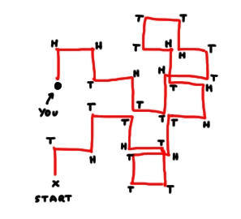
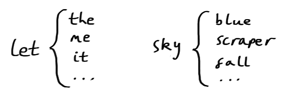
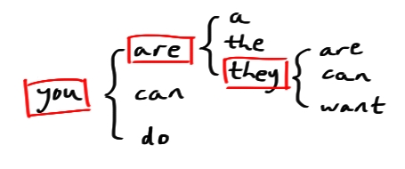
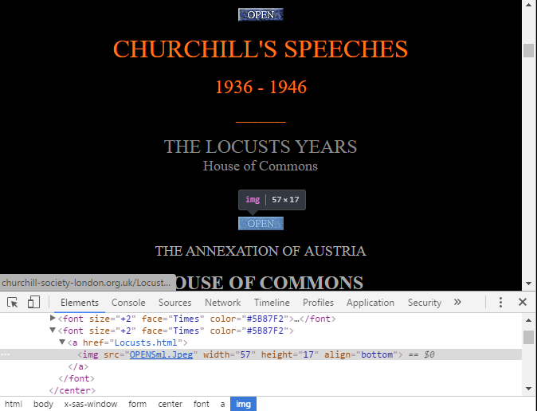
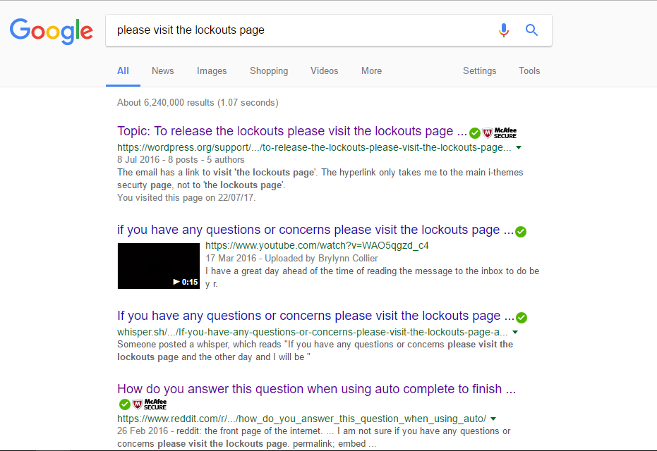

Introduction
Let me introduce the “predictive text game”. Play along with me if you like!
Open up a new message on your phone, type in a random word to get started (I’m choosing “the”), and then just keep hitting the top “suggested word” that appears above your keyboard. Here’s my result:
The following user says thank you for your time and consideration and I will be in the evening of the time to get the same as the first time I am not sure if you have any questions or concerns please visit the lockouts page and the other day and I will ve in the evening of the time to…
I think it’s pretty cool that your phone can make a good guess at what you’re going to write next. I mean, my phone’s magnum opus is pretty boring and repetitive - hopefully you’ll get something a bit more interesting! But I’m just impressed that it can do this at all.
Memoryless
Imagine you wake up in a massive field, and all you have with you is a single coin. You have no idea how you got there (the last thing you remember is your mate ordering an obscene number of Jägerbombs) but you don’t care because it seems to be the perfect place for you to demonstrate what a random walk is.
You stand up, wait a moment for the pain behind your eyes to subside, take a step forwards and toss the coin. Tails. You turn right, take a step forwards, and toss the coin again. Heads, You turn left, take a step forwards, and toss the coin again…

This is an example of a memoryless stochastic process - a stochastic process because your coin-toss results form a series of observations of a random variable, and memoryless because each toss is independent of all the tosses that came before it. “Memoryless stochastic process” is a bit of a mouthful though, so we call them Markov chains (after the mathematician Andrey Markov, who studied them in detail in the early 20th Century).
Markov chains
Formally, if it is given that a Markov system is currently in a certain state, then the next state of the system is independent of all previous states. We sometimes talk about “past” and “future” states, because often the series of random variables forming the Markov chain are indexed by timesteps - for example, if you took one step each second while going for your random walk, you would naturally index the first coin toss as “1”, the second as “2”, and so on. You’d also need to be seriously good at coin-tossing.
Predictive text
So, how do Markov chains fit in with predictive text?
Well, in the simplest possible case, we set up the system by making a big dictionary which links every word to all the words which might come after it.

The current “state” of the system is the last word that was typed. We get to the next state by picking one of the associated words at random.

Actually, because words usually do depend on the words that have come before them, predictive text uses the previous \[n\] words (usually 2ish) as the current state.
Let’s do some code already
Okay okay. We’re going to use Python to build a “MarkovGenerator” class: a MarkovGenerator object will take a bunch of text as input and set up the whole predictive-text-style Markov system we’ve just been talking about.
First we need to build our “cache” of states and potential next-states. To do that, first we’ll grab all the groups of \[n\] consecutive words in our text. The first \[n-1\] of these words are the “key”, and the last word is the “value”. For example, let’s take the sentence:
Rain down rain down come on rain down on me
Choosing \[n=3\], this would give us
rain down rain
down rain down
rain down come
down come on
come on rain
on rain down
rain down on
down on meSo taking the first 2 words as a key, and the third word as a possible value, we get
rain down => rain, come, on
down rain => down
down come => on
come on => rain
on rain => down
down on => meThis is what tuples() and build_cache() will do in the class we’re building.
Then once we have our MarkovGenerator object, we’ll want to use it to generate some text:
Start with: on rain => down (only possible choice)
rain down => come (chosen at random from [rain, come, on])
down come => on (only possible choice)
come on => rain (only possible choice)
Result: on rain down come on rainSo, let’s make the class.
# We're going to need to make some random choices later
import random
class MarkovGenerator(object):
# When we create a "MarkovGenerator" object, these things happen:
def __init__(self, text, tuple_size=3):
# Take the input string, and get individual words by splitting it up
self.text = text
self.words = self.text.split()
# How many words are taken for the current state? (3 by default)
self.tuple_size = tuple_size
# Create an empty dictionary, then fill it using build_cache (see below)
self.cache = {}
self.build_cache()
# Get all collections of n words
def tuples(self):
for i in range(self.tuple_size-1, len(self.words)):
# https://stackoverflow.com/questions/231767/what-does-the-yield-keyword-do-in-python
yield (self.words[i-self.tuple_size+k] for k in range(1, self.tuple_size+1))
# Build the cache dictionary
def build_cache(self):
for tup in self.tuples():
# The first n-1 words, as a Python tuple, are the key
tup = list(tup)
key = tuple(w for w in tup[:-1])
if key in self.cache:
# If the key's already there, add the last word of
# the tuple to the key's list of values
self.cache[key].append(tup[-1])
else:
# Otherwise add a new entry to the cache
self.cache[key] = [tup[-1]]
# Generate an output text string
def generate_text(self, length):
# Choose a random set of n-1 consecutive words to start
seed = random.randint(0, len(self.words)-self.tuple_size)
current = [self.words[seed+k] for k in range(0, self.tuple_size)]
# Set up a list for our generated words
gen_words = []
# length is how many words we want in the output
for i in range(length):
# Pop the first word off the current tuple, and store it
gen_words.append(current.pop(0))
# Use the rest of the tuple as the key to choose the next
# word (randomly!), and stick that word onto the end of the tuple
current.append(random.choice(self.cache[tuple(current)]))
# Stick all the generated words together and return!
return " ".join(gen_words)The Greatest Briton
We’ve got our generator, but before it can generate anything we need to give it something to read!
How about some material from the greatest Brit in history, as voted for by the Great British public in a BBC television poll in 2002?
Hmm.
Start with: oh yes => oh (only possible choice)
yes oh => yes (only possible choice)
oh yes => oh ... (only possible choice)
Result: oh yes oh yes oh yes oh yes oh yes ...No. Let’s not do that. Let’s stick to the original plan.

Soup and cigars
Churchill’s parliamentary speeches are available online on the website of The Churchill Society. I’m going to use the beautifulsoup4 Python module to do some web scraping.
from bs4 import BeautifulSoup
import requestsIn order to get the speeches we’ll need to figure out the layout of each page, so let’s just look at one speech for now.
locusts = "http://www.churchill-society-london.org.uk/Locusts.html"
response = requests.get(locusts)
soup = BeautifulSoup(response.content, "html.parser")
# Let's have a look...
soup<html>
<head>
<title>The Churchill Society London. Churchill's Speeches.</title>
<x-sas-window bottom="768" left="57" right="868" top="138">
<meta content="text/html;
charset=utf-8" http-equiv="Content-Type"/>
</x-sas-window></head>
[... loads more, I've truncated!]
<h4><center><font face="Times" size="-1">12 November 1936</font>
</center></h4>
<blockquote><p><font face="Times">I have, with some friends, put an
Amendment on the Paper. It is the same as the Amendment which I
submitted two years ago, and I have put it in exactly the same terms
because I thought it would be a good thing to remind the House of
what has happened in these two years. Our Amendment in November 1934
was the culmination of a long series of efforts by private Members
[... more...]
</p></td></tr>
</table></p></blockquote>
<p><center> </center></p>
<p><center> </center></p>
</body>
</html>We’ll use HTML tags to narrow down our selection as much as possible. The content we want is contained within <blockquote> tags, and each paragraph is wrapped in <font> tags.
# Get the text from between each pair of <font> tags within the <blockquote> tags
speech_raw = [passage.get_text() for passage in soup.blockquote.find_all("font")]
# Join all the paragraphs together into one long string
speech_raw = " ".join(speech_raw)
# "Chop off" the irrelevant info at the bottom
speech_raw = speech_raw.split("...................")[0]
# Have a look
speech_raw[:200]'I have, with some friends, put an\nAmendment on the Paper. It is the same as the Amendment which I\nsubmitted two years ago, and I have put it in exactly the same terms\nbecause I thought it would be a g'This is looking good, except we have some randomly scattered newline characters (\n) mixed in with the great man’s words. We’ll use a regular expression to tidy them up.
import re
# Compile the regex: maybe some whitespace, then \n, then maybe more whitespace
newline = re.compile("\s*\\n\s*")
# Sub each instance of the regex for a single space
speech = newline.sub(" ", speech_raw)
# Have a look
speech[:200]'I have, with some friends, put an Amendment on the Paper. It is the same as the Amendment which I submitted two years ago, and I have put it in exactly the same terms because I thought it would be a g'Marvellous.
Now we turn our attention to the site’s index page, and the links to the individual speech pages.

The speech pages are all accessed by these “OPENSml.Jpeg” image buttons. So we need to get all the link (<a>) elements that contain one of these buttons, and then take the href attribute from each of these link elements.
speech_index = "http://www.churchill-society-london.org.uk/SpchIndx.html"
response = requests.get(speech_index)
soup = BeautifulSoup(response.content, "html.parser")
# Find the "OPENSml" images; get their parents (the links); get the href attribute
speech_urls = [url.parent["href"] for url in soup.find_all("img", src="OPENSml.Jpeg")]
speech_urls['Webmap.html',
'Locusts.html',
'Austria.html',
'Munich.html',
'RusnEnig.html',
'Joybells.html',
'BdTlTrsS.html',
'BeYeMofV.html',
'Dunkirk.html',
'UnknWarr.html',
'FnstHour.html',
'thefew.html',
'ToCzechP.html',
'LaFrance.html',
'DthChbln.html',
'GutTools.html',
'LngHrdWr.html',
'CptsSoul.html',
'NEVER.html',
'Congress.html',
'HoCJan42.html',
'EndoBegn.html',
'InvaFrnc.html',
'DthRovlt.html',
'13May45.html',
'EndofWar.html',
'YrVictry.html',
'Revw1945.html',
'Fulton.html',
'astonish.html',
'WSCHague.html',
'HonAmrcn.html',
'Honour.html']Now we want to go to each of these pages (except the first one, which is a link to the site map) and get the speech, just like we did for the “Locusts” speech a minute ago.
speech_list = []
for url in speech_urls[1:]:
# Append the local url to the site's base url
full_url = "http://www.churchill-society-london.org.uk/%s" % url
# Get the page
response = requests.get(full_url)
soup = BeautifulSoup(response.content, "html.parser")
# Add the speech to the list
speech_raw = [passage.get_text() for passage in soup.blockquote.find_all("font")]
speech_raw = " ".join(speech_raw).split("...................")[0]
newline = re.compile("\s*\\n\s*")
speech = newline.sub(" ", speech_raw)
speech_list.append(speech)Finally, let’s stick all these speeches together into one massive long Churchillian superspeech.
speeches_str = "".join(speech_list)
speeches_str'I have, with some friends, put an Amendment on the Paper. It is the same as the Amendment which I submitted two years ago, and I have put it in exactly the same terms because I thought... [truncated]You ask, what is our aim? I can answer in one word: Victory
The time has come to create our Churchill-inspired MarkovGenerator.
winston = MarkovGenerator(speeches_str, tuple_size=3)Fingers crossed. Here we go.
text = winston.generate_text(length=300)
text“and to warn His Majesty’s Government, I make no promises. In no way have I mitigated the sense of the Government had begun. I am not at all costs, victory, in spite of the world to see, the military industries and communications of Germany and to be worthy of their devotion and their courage. The hospital ships, which brought off many thousands of millions of armed and trained men, for whom he works and contrives. The awful ruin of Europe, including-I say deliberately-the German and Italian resources. This is what the cost, who never flinched under the German Air Force, had to be, incomparably the strongest possible resistance from the west, the enemy wherever he may have in respect of long-distance bombing aeroplanes and that France has yet been given to us to draw more readily upon our shipping virtually undiminished, and with the comfort of knowing that his country had ever formed. So in doing this and for the very large part of what happened at sea, and a war leader. I felt encompassed by an exaltation of spirit which was not denied to their care. But all depends now upon the routes nearer home, and to its close. In its place we are to stir the English-speaking Commonwealths be added to one of the war. I should like to do. That is what they are being slowly compressed, and we see with our shipping virtually undiminished, and with the magnificent efforts of the nation free as soon as possible. Secondly, the presence of these Balkan countries where only one which has overtaken her and we shall fight in France, and what might now shower immeasurable material blessings upon mankind, may even do him some good. It certainly offers a measure of agreement between us, and we shall defend every” —
winston, July 2017
Admittedly, it’s not quite up to the standard of the man himself. But you can feel his presence behind the semi-nonsense. Maybe.
To improve is to change; to be perfect is to change often
I lied earlier.
In reality, your modern phone’s predictive text isn’t a truly random Markov process.
That’s because your phone is clever: not only does it store the possibilities for the following word, but also the relative likeliness of each word being the one you want. For example:
fish and => chips, 0.999
quinoa, 0.001
...
And then it might suggest the top 3 words in this list to you while you’re typing.
Indeed, sometimes your phone is even cleverer than that. If you choose one of the suggestions more often than another, it will update the probabilites to better represent your personal use. Or if you ignore its suggestions and type something that isn’t in its cache already, it will add your new word to the cache and remember it for next time.
Nevertheless, the Markov process we’ve explored in this post is there in the background, and without it, predictive text technology wouldn’t have reached the point where it is today. And we wouldn’t have any of the other more amusing applications of Markov chains for text generation either.
Footnote: Lockouts page?
At the top of this post, when I played the predictive text game, the phrase “lockouts page” produced itself. I was fairly sure I’d never typed that. What even is a lockouts page?
When I tried to find an answer for that question, I found something interesting…

It seems my “personal” predictive text suggestions aren’t actually very personalised. I’m actually quite relieved, because this discovery has reassured me that if I am indeed really boring and repetitive then everyone else using an Android phone is too.
Bonus: define “funny”
We can make a MarkovGenerator object with any text string we like. So I tried out a couple of others, including Webster’s Unabridged English Dictionary. Here are some of my favourite “definitions” the webster MarkovGenerator came up with.
ANNECTENT An*nec”tent, a.
Etym: [Pref. re- + center.]
Defn: To predict or foretell; characterized by inflammation of the sun.
ANTHOLOGIST An*thol”o*gist, n.
Defn: The quality of being persecuted.
BLACKBIRDING Black”bird*ing, n.
(Chem.) Defn: The quality or state of being health.
HORNPIKE Horn”pike`, n.
Defn: The supraoccipital bone.
IMPLAUSIBILITY Im*plau`si*bil”i*ty, n.
Defn: A delicate person; a swell neighborhood.
JEWELER Jew”el*er, n.
Etym: [Cf. Chatter.]
- To decorate with stucco, or fine hair, for removing substances from organic material and spiritual rulers, now used ironically or contemptuously.
MESSENGER Mes”sen*ger, n.
Etym: [Ar.]
Defn: An instrument which is assumed to pervade all space.
POTPOURRI Pot`pour`ri”, n.
Etym: [L., silkworm.
See Silkworm.